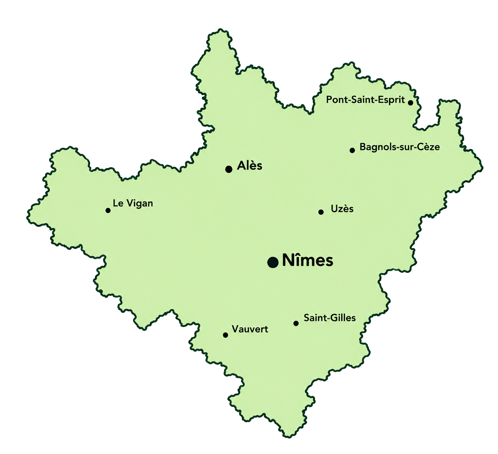
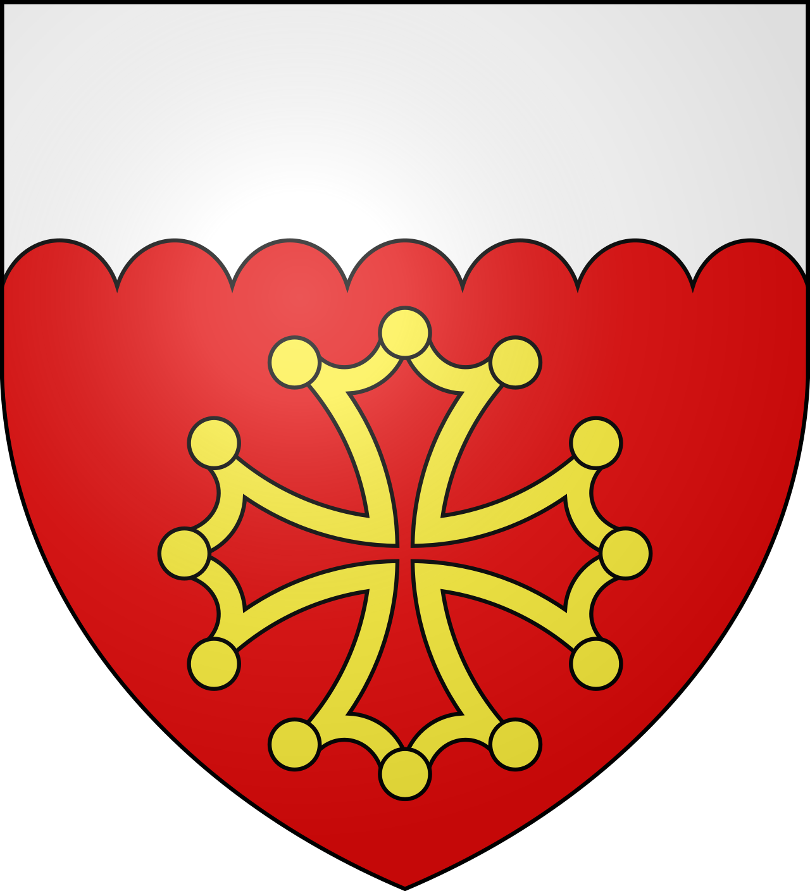
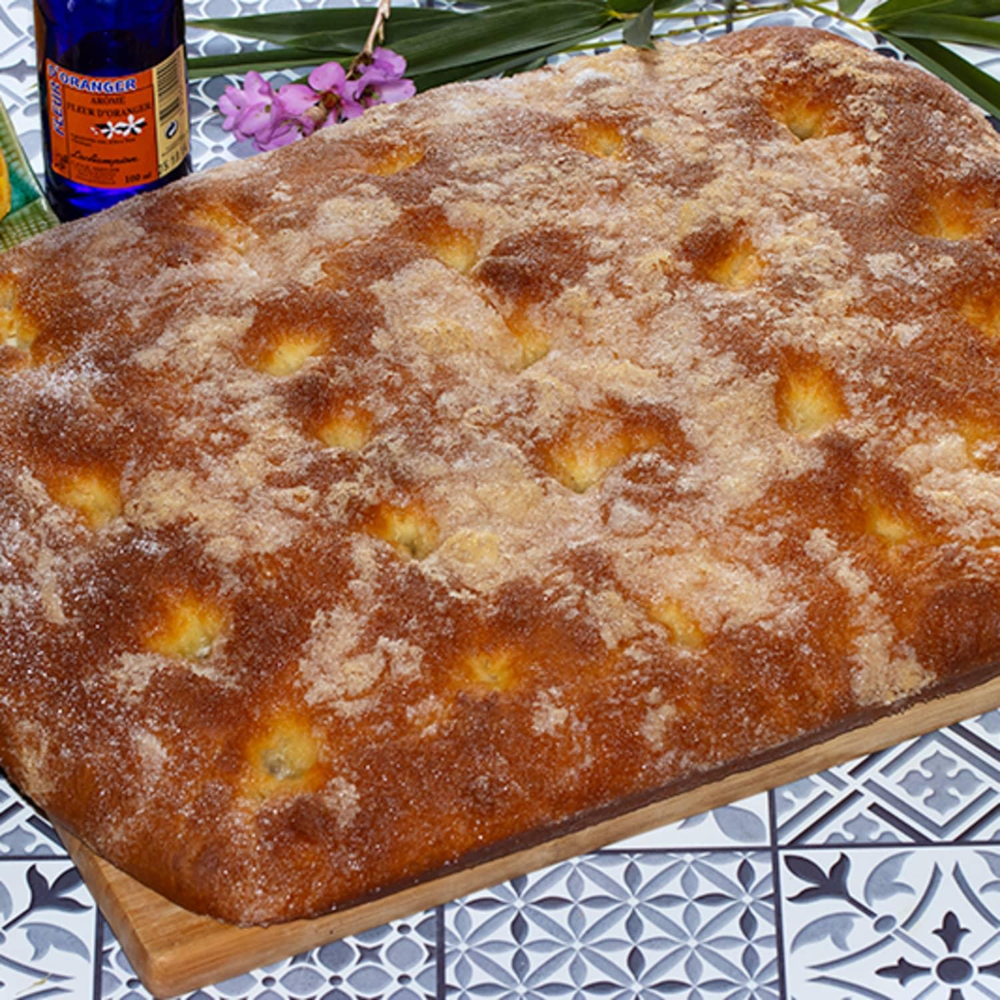

Derrière les remparts de la cité de Saint Louis, on ne la confond avec aucune autre : une brioche plate, moelleuse, sucrée et beurrée, qui embaume la fleur d'oranger. Gâteau de Noël devenu gourmandise de toute l'année, la fougasse d'Aigues-Mortes est l'emblème sucré de la petite Camargue.
La fougasse est l'un des plus vieux pains du Midi. Son nom vient du latin panis focacius, le pain cuit dans le foyer, devenu fogatza en ancien occitan. Les boulangers en façonnaient une petite avant d'enfourner le pain : elle leur permettait de vérifier que le four était à bonne température, et on la mangeait au petit-déjeuner.
À Aigues-Mortes, la fougasse a pris un tout autre visage. Plus de lardons ni d'olives : la pâte devient une brioche enrichie d'œufs, de beurre et de sucre, étalée sur la plaque et parfumée à la fleur d'oranger. En cuisant, le sucre et le beurre du dessus forment une fine croûte caramélisée, tandis que l'intérieur reste très moelleux.

À l'origine, la fougasse sucrée était préparée pour Noël. Elle faisait partie des treize desserts du réveillon, la tradition provençale qui s'étend jusqu'au Gard. Les familles apportaient au boulanger leurs propres ingrédients, le beurre, le sucre et l'eau de fleur d'oranger, et celui-ci préparait la fougasse dans son four.
Le secret ? Beaucoup de sucre, beaucoup de beurre, de la fleur d'oranger, et « beaucoup d'amour dedans ».
Aujourd'hui, la fougasse se vend toute l'année dans les boulangeries de la ville, et les visiteurs des remparts repartent rarement sans elle. Plusieurs maisons perpétuent la tradition : la famille Poitavin depuis 1932, la boulangerie Olmeda, qui revendique une recette transmise sur quatre générations et produit jusqu'à une trentaine de plaques par jour en été. Certains artisans aimeraient la voir protégée par une indication géographique.
Brioche, beurre, sucre caramélisé et fleur d'oranger : la fougasse appelle un vin aromatique et frais. Les muscats du littoral, à quelques kilomètres de la cité, s'imposent naturellement.
Muscat de Lunel
AOP · Hérault (34)
Produit à une quinzaine de kilomètres d'Aigues-Mortes, ce vin doux naturel offre des notes de fleurs blanches, d'agrumes et de miel qui répondent à la fleur d'oranger.
Sable de Camargue gris
IGP Sable de Camargue · Gard (30)
Le vin des sables, cultivé autour d'Aigues-Mortes : un rosé très pâle, frais et fruité, pour une fougasse au goûter ou à l'apéritif.
Clairette de Bellegarde
AOP · Gard (30)
Un blanc sec, souple et floral, à l'ouest de Nîmes. Une option légère pour qui préfère un vin non sucré.
Muscat de Mireval
AOP · Hérault (34)
Un autre muscat du littoral, aux arômes d'abricot et de fruits confits.
Autrefois, les boulangers glissaient une petite fougasse dans le four avant le pain : si elle cuisait bien, le four était prêt.
La fougasse sucrée faisait partie des treize desserts du réveillon, symbole du Christ et des douze apôtres dans la tradition provençale.
Pour Noël, chaque famille apportait au boulanger son beurre, son sucre et sa fleur d'oranger : chaque fougasse était un peu différente.
Aigues-Mortes a été fondée par Saint Louis au XIIIe siècle pour disposer d'un port sur la Méditerranée. Ses remparts sont restés intacts.